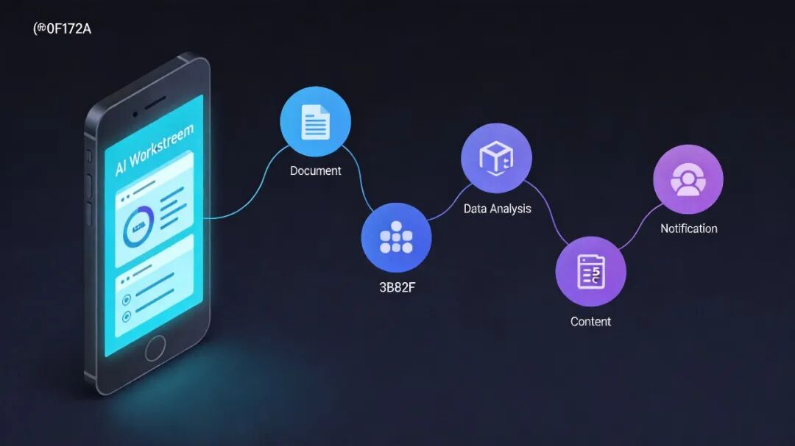
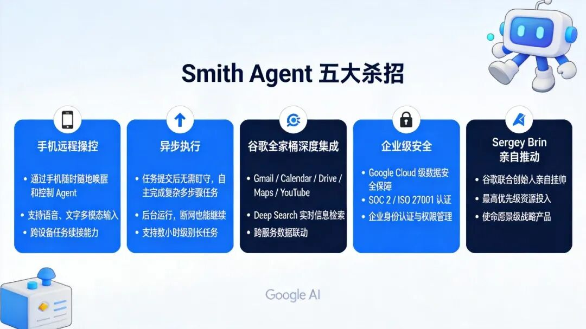
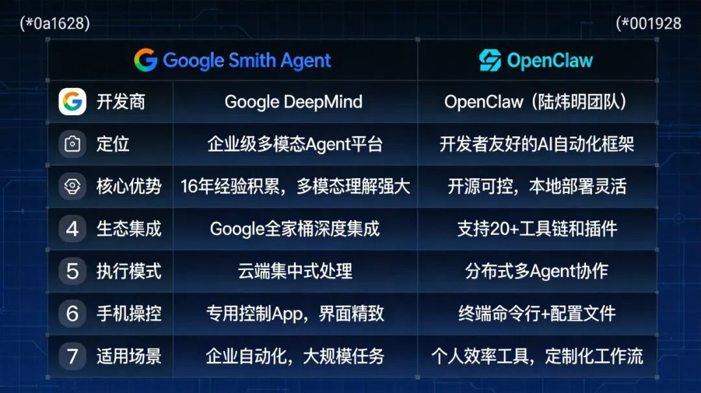

你正在地铁上，突然想起有个API文档还没写完。以前你只能忍着到公司再弄，现在——你掏出手机，给AI发了一条指令，20分钟后代码自动跑完了。
这不是科幻，是Google员工已经用上的真东西。
它的名字叫Agent Smith。

据Business Insider和Live Mint近日报道，这款工具在Google内部火到失控，访问权限不得不限制。Sergey Brin亲自站台的战略级产品，2026年Google AI Agent的旗舰项目，定位直接对标OpenClaw。
我扒了一圈资料，发现Smith Agent这5个杀招，确实有几把刷子。
痛点：为什么你的AI编程助手总是不够"随时待命"？
用过AI写代码的人都懂一个痛：连接焦虑。
你开着ChatGPT写代码，突然地铁进站没信号了，你让Claude跑一个长任务，上班路上不敢关手机怕断了。你躺在床上想起要改个配置，还得爬起来打开电脑——AI明明很强大，但你始终被"在线才能用"这件事拴住。
现在主流的AI编程助手，包括OpenClaw，执行任务时大多需要保持连接。任务跑多久，你就得等多久。Agent Smith瞄准的，就是这个缺口。

杀招一：手机远程下达指令，后台自动跑完
这是Smith Agent最直观的优势：你的手机只是一个遥控器。
你在手机上用自然语言描述任务——"帮我把用户认证模块改成支持OAuth 2.0，顺便更新一下文档"——发出去，AI就开始工作。你可以把手機揣回口袋，刷剧、睡觉、开会，都不影响。任务完成后，Smith会推送通知告诉你结果。
这对移动办公场景简直是刚需。通勤路上突然有个想法要验证，掏出手机两分钟搞定，不用非得坐到电脑前。这才是真正的"AI随身带"。
杀招二：真正的异步执行，不用盯着屏幕
部分AI编程助手在工作时会维持会话连接，连接断开=任务中断。
Smith Agent基于Google内部的Antigravity平台，原生支持异步任务队列。你下达指令，任务进入队列，AI后台处理，不管你在线不在线，结果都会在任务完成时同步给你。
这个设计对复杂的长任务特别友好。比如跑一套完整的代码重构，或者生成一份详细的技术方案——这类任务可能耗时数小时，异步执行彻底解放了你盯着屏幕的焦虑。
你不是在等AI，你是在让AI等你。
杀招三：谷歌全家桶深度整合，Google系工具无缝衔接
这是Google对抗OpenClaw最厚实的一张牌。
Smith Agent与Google Workspace（Gmail、Docs、Drive、Calendar）打通。AI可以直接读取你的邮箱上下文，帮你写回复；能访问你的文档库，理解项目背景；还可以在Drive里自动整理文件结构。
做一次代码评审，AI不仅能看代码，还能同时查阅你放在Drive里的架构文档和Jira上的任务描述——这些信息在OpenClaw里需要额外配置，Google员工直接拿来就用。
全家桶用户会发现，这根本不是换一个工具，是在原生系统里加了一层智能。
杀招四：企业级背书，安全与权限开箱即用
Smith Agent是Google内部员工正在使用的生产工具。
这意味着它一出生就经过了企业级的安全审查：数据权限、代码隔离、审计日志，这些在开源工具里需要手动配置的东西，Smith Agent直接继承Google的企业安全体系。
代码不外泄，权限按角色分配，所有操作留痕——对那些担心把代码交给外部AI服务的团队来说，这比任何承诺都管用。
OpenClaw作为开源方案，在企业安全合规这块需要额外的部署和配置，Smith Agent则是现成的企业套餐。
杀招五：创始人亲自推动，2026战略重点
Sergey Brin重新活跃于AI领域后，AI Agent被他列为最高优先级。
Agent Smith是Brin亲自盯的项目，这不只是资源倾斜，更是战略信号：Google不会在这场AI Agent大战里缺席。
据Business Insider引用Brin的原话："AI Agent将成为Google 2026年的重点发展方向，公司正在开发与OpenClaw类似的工具。"
一个创始人为一个产品站台，意味着它能调动的资源级别完全不同。内部火到失控→访问受限→加速迭代，Smith Agent正在走一条内部验证→外部放量的典型路径。
原理：Smith Agent为什么能做到这些？
技术层面，Smith Agent的能力建立在三个基础上：
1. Antigravity平台： Google内部的AI Agent运行框架，支持任务持久化、异步调度、状态恢复。这解决了"断线丢任务"的核心问题。
2. 自然语言任务解析： 用户不需要懂API，直接用日常语言描述需求，平台负责拆解成可执行的子任务。
3. Workspace全系打通： Google Workspace本身就是全球主流的办公套件之一，Smith Agent直接调用这些能力，省去了大量第三方集成的工作量。
说白了，Smith Agent本质上是一个移动优先、异步执行、Google系工具全打通的AI Agent方案。这三个特性的组合，在目前的竞品里具有独特优势。
启示：AI Agent的下一站是"无感化

Smith Agent的出现，揭示了一个趋势：AI Agent的终极形态不是越来越强大，而是越来越无感。
你不需要学怎么用它，不需要守着它工作，不需要担心它断线——你只需要在需要的时候说一句"帮我搞定"，然后去做别的事。
OpenClaw打开了一扇门，Smith Agent正在把门后的房间装修得更好住。
对于普通用户来说，竞争是好事——两个顶级玩家对打，受益的是所有用AI的人。
对于开发者来说，Smith Agent的开源计划值得持续关注——Google一旦决定对外放量，整个AI Agent的竞争格局都会被改写。
AI Agent的竞争，本质上是在争夺"谁能让你更懒"——谁能让人类越来越少地参与执行过程，谁就赢了下一程。
我是追踪AI工具最新动态的观察者，每周深度测评2-3款AI产品，关注我，一起看懂AI浪潮。
如果这篇文章对你有帮助，点赞告诉我想继续聊这类话题，在看让更多人看到，转发给正在关注AI的你。
「AI工具实测·避坑指南」—小创，专注AI工具真实测评，助你少走弯路。
#AI工具 #OpenClaw #AI编程助手 #谷歌Smith# #人工智能